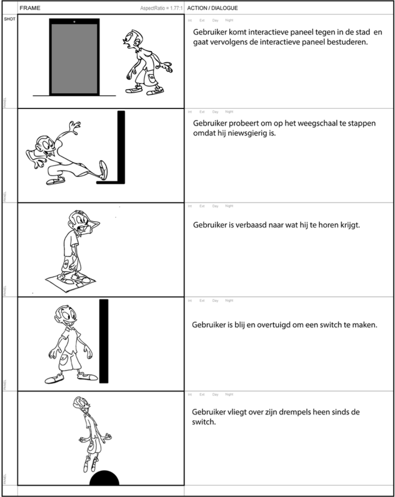
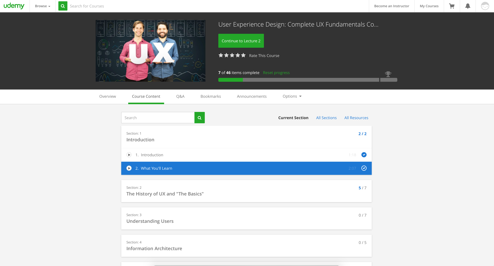

Hier kunt u mijn keuzes en werkzaamheden voor het leerdoel SCO terug lezen voor de activatie campagne voor YourSportPro.
UXU methodes
Enquête
Om erachter te komen wat de drijfveer is om een personal trainer te nemen, heb ik en mijn groep een enquête opgesteld die wij via sociaal media verspreid hebben. We hebben ook een aantal personal trainers benaderd die het vervolgens op hun pagina gedeeld hebben, zodat we een aardige verdeling hebben tussen mensen die al een trainer hebben en mensen die er geen hebben. Daarnaast hebben wij niet alleen op onze eigen kanalen gedeeld. We wilden een goede verdeling van de leeftijd. Daarnaast hebben we ook globaal bieb onderzoek gedaan en hebben we David Kompier een aantal vragen gesteld. In sprint 1 wilde wij meer te weten komen over het publiek groep want wij van freshheads hadden gekregen was geen doelgroep. Dus we hebben via onze onderzoek en enquête een doelgroep gekozen. We hebben ook verschillende onderzoekmethodes gecombineerd (triangulatie) om een beter resultaat te krijgen. Nadat wij een doelgroep hadden gekozen hebben wij persona’s gemaakt gebaseerd op onze doelgroep.
onderzoeksdocument
Interviews
Om meer te weten over onze doelgroep en hoe vaak ze sporten. Ze wij in gesprek gegaan met onze doelgroep. We hebben een aantal mensen uit onze doelgroep geïnterviewd. Ik heb samengedaan met Sophie. We hebben ze vragen gesteld en hun verhaal vertellen rond sporten en wat denken ze over een personal trainer. Door onze vragen is het een discussie punt geworden voor onze doelgroep waarom wel of niet een personal trainer. Resultaten van de interviews kunt u lezen in de onderzoek document.
Prototype en Testen
Nadat wij een duidelijk concept hadden hebben wij ideeën bedacht en een guerrilla actie was een van ze. We wilden ergens in de Nederland een weegschaal neer zetten en wanneer erop gaan staan komen personal trainers op hun af om te vieren dat hij/zij durft. Verder het eerste contact moment hebben met YSP. Om achter te komen of deze idee uitvoerbaar is en of een weegschaal op straat bij mensen opviel. Op achter te komen ben ik samen met Tjebbe op stap gegaan. Wij hebben een weegschaal op verschillende plekken in Tilburg geplaatst. Uit deze testen konden we zijn wanneer het wel en niet opvalt. Om een beeld te krijgen van hun onze guerrilla actie video eruit zal zijn hebben wij tijdens het testen de reacties gefilmd. Hier moet ik zeggen dat het heel positief over kwam. We hadden ook vragen gesteld aan onze doelgroep wat ze ervan vonden. In de volgende video kunt uw onze test en prototype video zien.
Reflectie
Voor semester 4 moest ik samen met me proftaak groep een activatie campagne bedenken voor YourSportPro. “Bedenk een digitaal gefocuste activatie strategie die gericht is op de sporter om conversie op het Your Sport Pro platform te stimuleren.” Dit is de eerste keer dat ik een actieve campagne ontwikkel voor een platform. Verder is het ook het eerste keer dat een heel semester gebaseerd is op een proftaak. UXU is altijd een interessant vak voor mij omdat ik de kans krijg om met users te werken. Interactie met je users is altijd belangrijk wanneer je een product maakt, want als je users bij getrokken zijn bij je proces is je product veel sterker en beter onderbouwd. Dus dit semester was ik leergierig voor UXU. Ik wilde nieuwe manieren leren hoe ik users bij mijn proces betrek. We zijn begonnen met workshops over onderzoek en interviewen, hierbij heb ik een aantal tips meegekregen. Hoe stel je vragen om het juiste antwoord te krijgen van je user. Naast de users zijn antwoorden moet ik conclusies trekken. Hier was ik niet zo goed in. Hanneke heeft een speciale workshop hoe je het beste conclusies uit je onderzoek kan halen. Hier was het bij ons fout gegaan toen ik en mijn groep conclusies gingen trekken voor ons onderzoek document. Naast conclusies trekken hebben we ook een Workshop testen gehad. Er zijn heel veel manier van testen voor verschillende doeleinden. Dus wanneer je je testplan maakt moet je rekening houden welke resultaten je eruit wil halen en bij welke test methode je het best resultaten kan krijgen. Dit semester zijn we iets dieper op het UXU-gebied gegaan. Als ik het voor een tweede keer zou moeten doen zou ik iets dieper op in gaan. Meer informatie halen bij de doelgroep zodat ik een betere en scherpe persona kan maken. Ik vond mijn persona persoonlijk niet zo sterk. Het is niet de eerste dat ik met persona’s werk maar voor deze activatie campagne was het lastig. Voor de volgende keer zal ik ook meer aandacht geven aan UXU voor mijn persoonlijk leerdoelen. Ik heb wel tijdens het semester een UXU-cursus gevolgd over applicatie ontwerp. Hier leer je hoe je met mensen moet omgaan en hoe je de users moet gebruiken bij je ontwerpfase. UXU blijf voor mij altijd een interessant vak en ik ben benieuwd wat we volgende semesters gaan krijgen.
